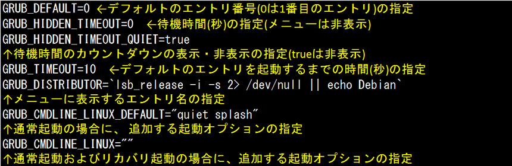
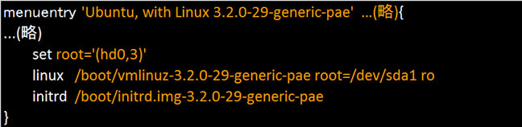
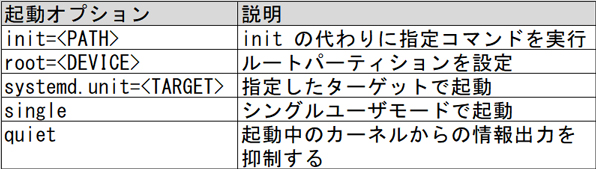

- 問題ID : 21851 ブートプロセスとGRUB
- 履歴
正解
grub-mkconfig -o /boot/grub/grub.cfg
解説
GRUB2の設定ファイルは、標準では「/boot/grub/grub.cfg」（CentOS7では「/boot/grub2/grub.cfg」）です。一般的なBIOSを使ったシステムは、これに該当します。
GRUB2
では「grub.cfg」ファイルを直接編集することはありません。設定内容は「/etc/default/grub」ファイルおよび「/etc
/grub.d」ディレクトリ内のファイルに記述し、「grub-mkconfig（ディストリビューションによってはgrub2-mkconfig）」
コマンドで、設定対象の「grub.cfg」を指定して内容を反映させます。
書式：
grub-mkconfig -o 出力先ファイル名
よって正解は
・grub-mkconfig -o /boot/grub/grub.cfg
です。
その他の選択肢については以下のとおりです。
・grub-mkconfig -o /etc/default/grub
出力先に「/etc/default/grub」を指定しているので、誤りです。
・grub-install /boot/grub/grub.cfg
・grub2-install /etc/default/grub
これらはGRUB2をインストールするコマンドなので、誤りです。
参考
【GRUB2の設定方法】
GRUB2（GBUB
バージョン1.9以降）の設定ファイルは、標準では「/boot/grub/grub.cfg」（CentOS7では「/boot/grub2
/grub.cfg」）です。一般的なBIOSを使ったシステムは、これに該当します。UEFIを使ったシステムの場合は、ディストリビューション等に
よって違いますが、一般的には「/boot/efi/EFI/***/grub.cfg」です。***はディストリビューションによって違う値が入りま
す。CentOSでは「centos」、RHELでは「redhat」、Ubuntuでは「Ubuntu」です。
しかし、「grub.cfg」
ファイルを直接編集することはありません。設定内容は「/etc/default/grub」ファイルおよび「/etc/grub.d」ディレクトリ内の
ファイルに記述し、「grub-mkconfig（またはgrub2-mkconfig）」コマンドで、設定対象の「grub.cfg」を指定して内容を
反映させます。
なお、UEFIにおけるgrub.cfgの記述は、基本的な構文はほぼBIOSの場合と同じですが、詳細はディストリビューションによって扱いが異なる場合がありますので詳しくは個々のディストリビューションをご確認ください。
GRUB2の全体的な設定は /etc/default/grub ファイルに記述します。

また、カーネルイメージ、ルートパーティションの指定などは /etc/grub.d ディレクトリ内のファイルで行います。
以下は カスタムの設定を記述するファイル /etc/grub.d/40_custom の例です。

menuentry とそれに続く「{}」で囲まれている部分はひとまとまりで、ひとつの起動設定になっています。
つまりこの部分を複数セット記述すれば、起動時にそれらの設定のうちから選んで起動させることができます。
それぞれの項目は以下のように使用します。
・menuentry
各設定の名前を指定する項目
引用符内に名前を設定します。
・set root='(hdディスク番号,パーティション番号)'
カーネルイメージや初期 RAM ディスクイメージの含まれているパーティションを指定する項目
パーティション番号は1から数えます。
例）
1番目のディスクの1番目のパーティション → (hd0,1)
1番目のディスクの2番目のパーティション → (hd0,2)
2番目のディスクの2番目のパーティション → (hd1,2)
・linux
カーネルイメージファイルを指定する項目
この linux のパスは、set root の項目で指定したファイルシステムにおけるパスとして記述します。ディストリビューションによっては「linux16」となっている場合があります。
カーネルイメージファイルのパスに続けて、起動オプションを指定することができます。
主な起動オプションは以下のとおりです。

・initrd
初期 RAM ディスクイメージファイルを指定する項目
なお、UEFIの場合、ディストリビューションによっては、カーネルイメージの指定や、初期RAMイメージの指定が「linuxefi」や「initrdefi」となっている場合があります。